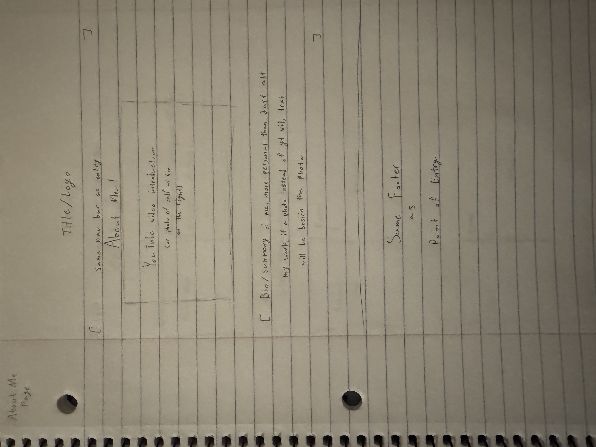
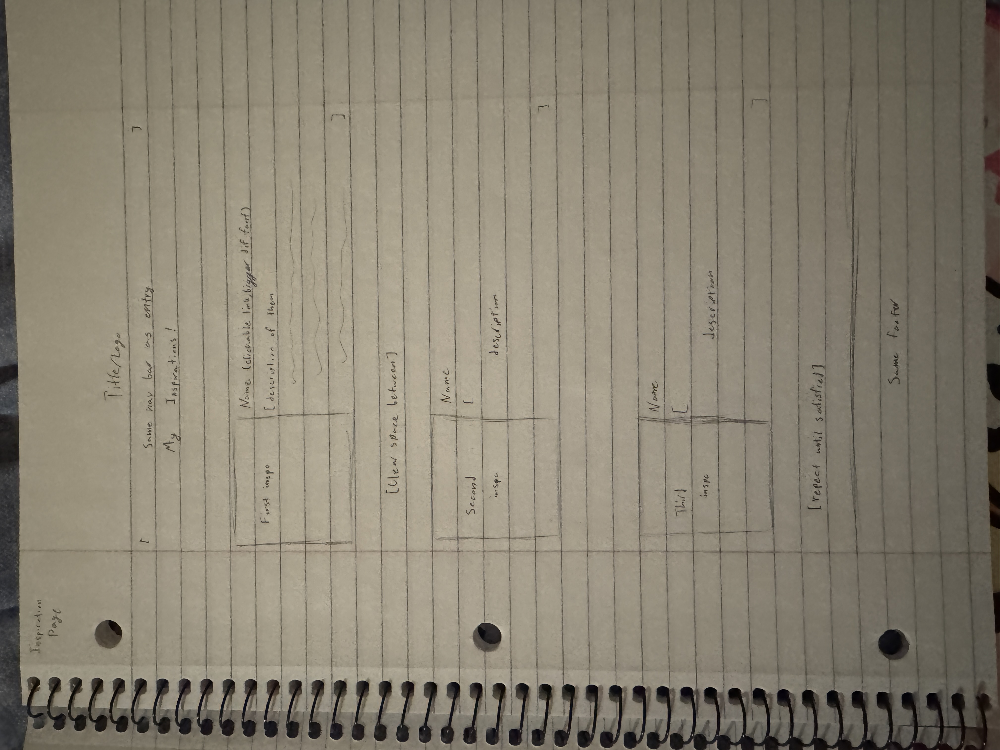

This assignment has definitely been the hardest for me so far. Figuring out how to link each page to the next and make sure all the child folders were connected was a lot, but after a lot of trial and error, I think I finally got it to work. I will definitely forget to add new page links to all the existing links eventually; a lot of experimenting on how simple I can make the file placements without fully breaking the site. After getting it all to work, it was definitely relieving to finally have the basis of the site functioning; however, there is definitely much to be desired in the looks of the site. For now, I’m likely keeping the color scheme mainly just so I don’t have to change everything myself. I also feel like I’m not really making it “sketchbook” like and all chaotic, I want to, but I also don’t want it to look messy and all over the place, so we’ll just see how the end product ends up; hopefully it’s still somewhat organized.
Step two was definitely the one I took the least amount of time on, since I already edited all of the pages before this assignment; the only changes I made were to make the titles and the links all center-aligned. I also decided to not add the CSS Basics assignment to all of the pages and just to the point of entry. As of now, I will likely only add more important links to them, like the About and Inspiration pages; however, for more assignment-based (as in it’s not pertaining as much to me or my work), they’ll likely only have links from the Point of Entry page, and they will also likely only have a link back to the Point of Entry or to any connected pages for the assignment.
I did have a few troubles with setting up my GitHub link, but luckily it was nothing too major. I don’t know how to have my GitHub update with my files without having to reupload all my files manually, which did become an issue when I constantly had to reupload them to see if anything needed to be changed and fix those changes. As for fixing any issues, all of my files were previously in a folder, so I had to change all the anchor tags to work with each other again, and at first it was fine, but at my initial upload none of the links worked, so I had to play around with the slashes a few times and change them all again once I finally got it to work, just a lot of tedious deleting from each page. The GitHub page took a long time for it to fully work, I’m not sure if it’s something I did on my end or just because of the amount of anchor tags it took longer to load everything but I waited for more than 10 minutes for sure while doing hard resets and even more trial and errors. This assignment definitely gave me the most mental anguish.
For redoing my Point of Entry, my main focus was adding the images; throughout the other lessons, I have been gradually adding what I’ve learned from those and applied it to my Point of Entry. Since I did this, the only busywork was figuring out flexboxes again and troubleshooting what works and what looks good. My main issue was deciding on the sizing of the images; I’m indecisive in general, so it was hard for me to decide whether to go big, small, medium, etc. Compared to my original wireframe, I kept some of the basics; the idea of one of the first things being an image and a small about me was kept, but the blurb was much more about random things about me than my style. I don’t have the carousel of images although even when I made the sketch I knew that was probably a bit too ambitious of me. I didn’t end up doing the footer section, although I’m not opposed to making one later on if my website gets long enough to warrant it. I decided to go the route I did on the page because I wanted it to be a bit more tuned to myself but still not too chaotic, hence the random Pokemon scattered about. As for what I think would need the next main alterations, I think it would be the inspiration page. I want to leave the general lessons alone after I finish them as a way to look back at my progress, but since my inspiration page is one of my main ones and has images, I want to clean it up and make it more cohesive.

